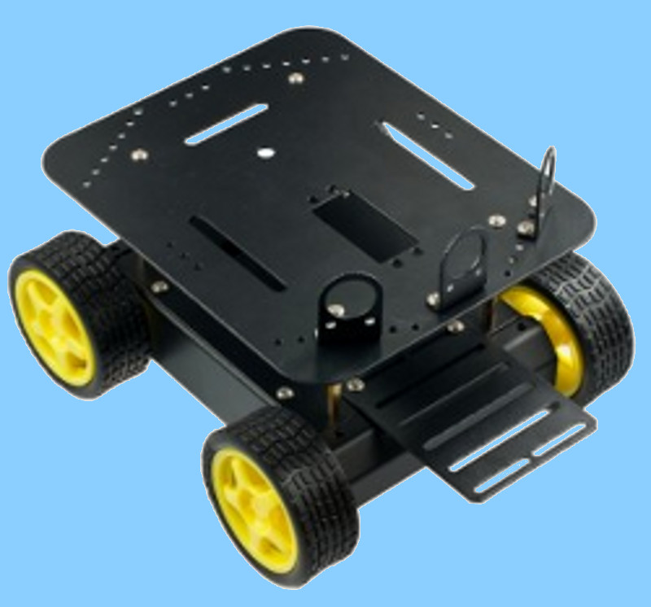
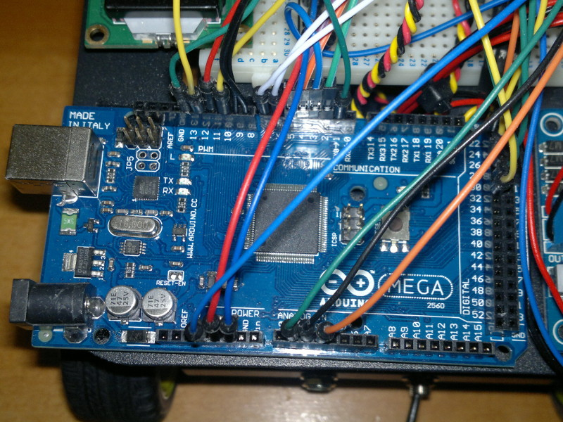
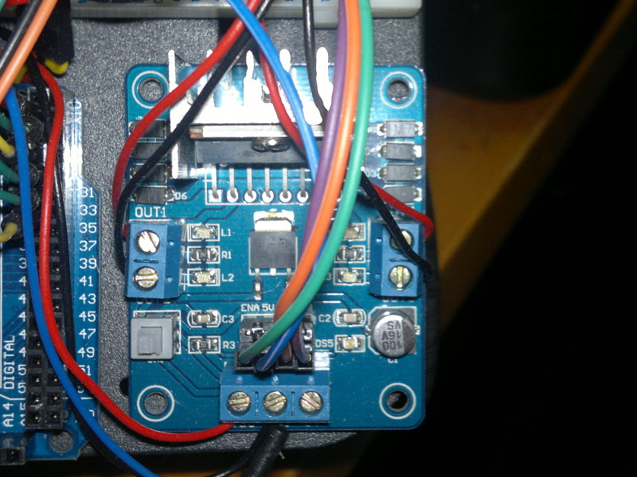
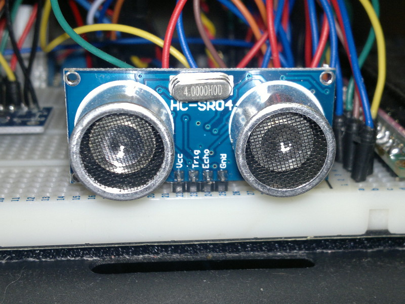
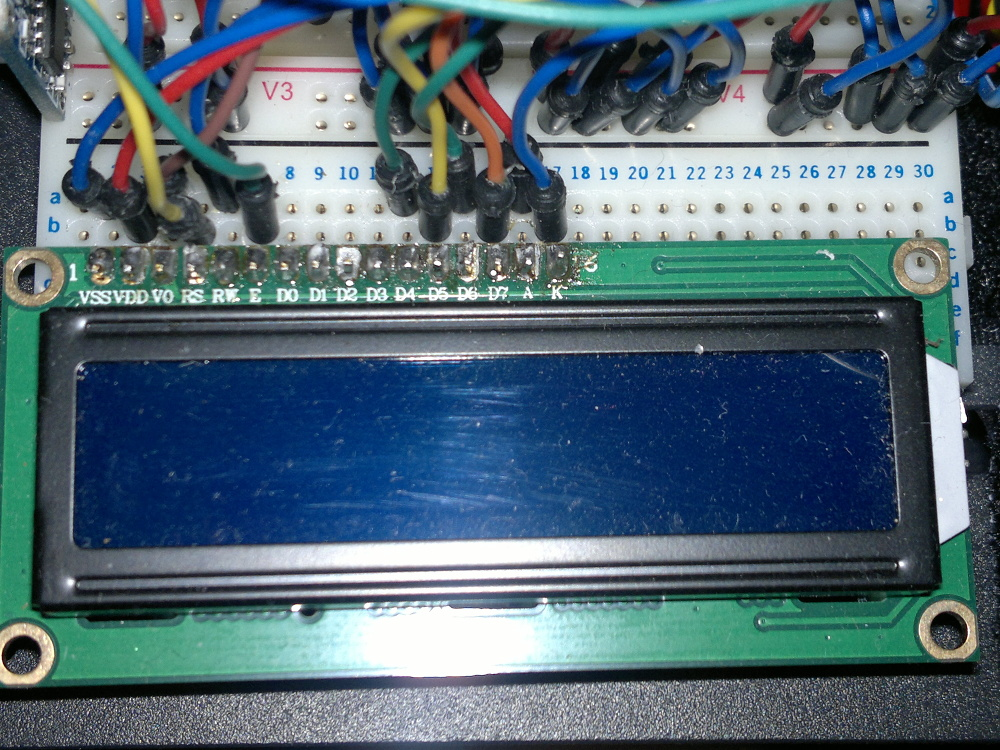
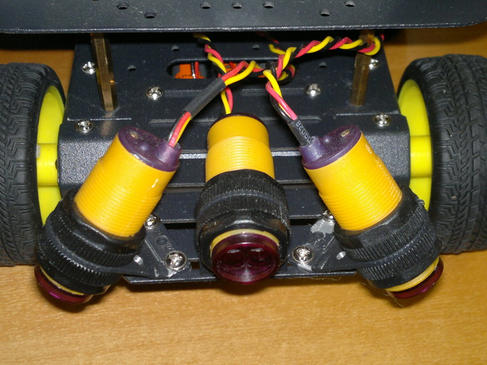
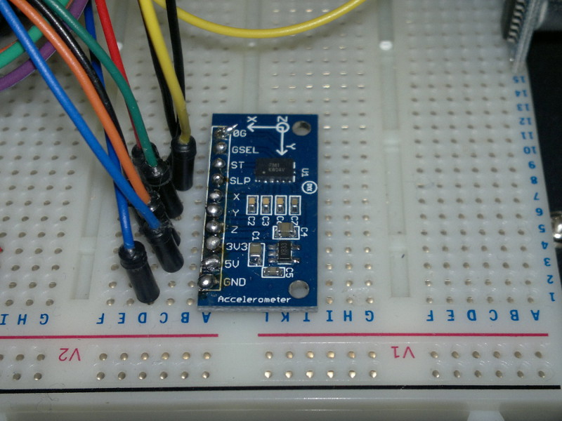
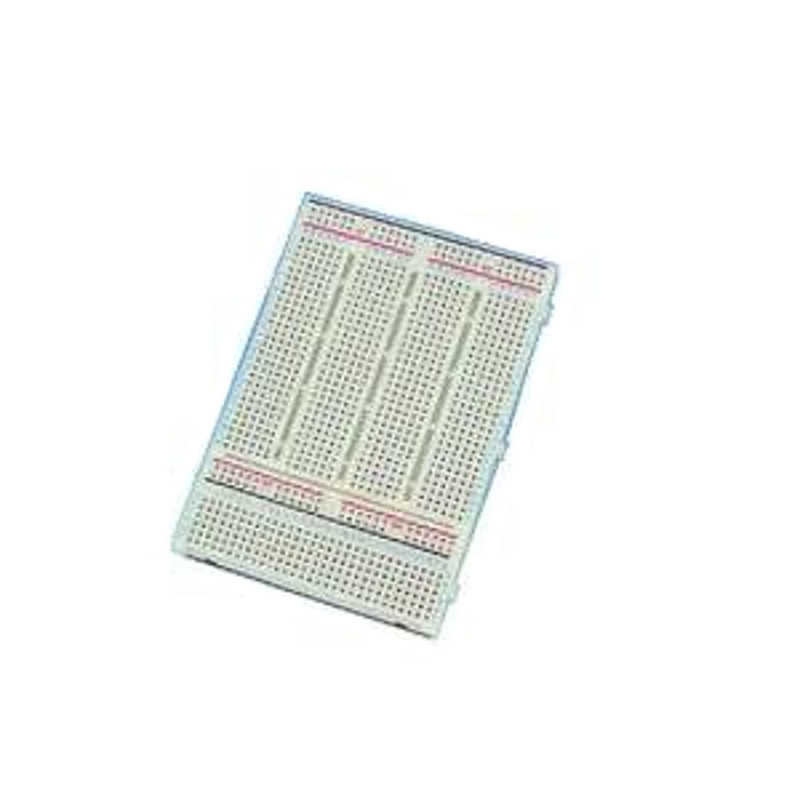

Arduino Robot Components
DFRobot Pirate Chassis - I chose this chassis as I wanted a stable base that I could add extra hardware to at a later date but one of the smaller and cheaper 3-wheeled chassis on the market would do just as well or you could obviously build your own. I bought the chassis from an Ebay vendor but it is also available from the DFRobot website. The chassis will be powered by 5 x AA 3800mAh Ni-MH rechargeable batteries, although any similar cells would be suitable.

Arduino Mega 2560 R3 - These are available from a number of specialty electronics sites and from numerous Ebay vendors. I had originally intended to use the smaller and cheaper Arduino Uno but decided that the extra interfacing capabilities of the Mega would be useful for the project. The Arduino will be powered by a 9V PP3 300mAh Ni-MH rechargeable battery separate from the batteries used to power the chassis.

L298N Motor Shield - A motor shield is required to control the two sets of electric motors. There are several different types of Arduino motor shields available often with slightly different connections. I purchased the model to the right from an Ebay vendor.

HC-SR04 Ultrasonic Sensor - These are available cheaply from Ebay suppliers. There are different versions available but they appear to have the same connections.

Standard 16x2 Character LCD Screen - I used a standard monochrome backlit screen which are available from a number of online suppliers. They often come with a separate 16 pin header which must be soldered to the circuit board which can be a little fiddly if your soldering skills are anything like mine.

Infra-red Sensors - I bought two pairs of these sensors from an Ebay vendor. They were fairly cheap and easy to get working but could potentially be upgraded to better ones in the future.

MMA7361 Three Axis Accelerometer - This was also a cheap purchase from an Ebay vendor. It was supplied with a 10 pin header that also needs to be soldered to the circuit board before use.

Large breadboard - Any larger size breadboard will do. You will also need an assortment of inter-connect wires of different colours for connecting the various components which can either be bought or made yourself from some solid core wire.

Return to home page.